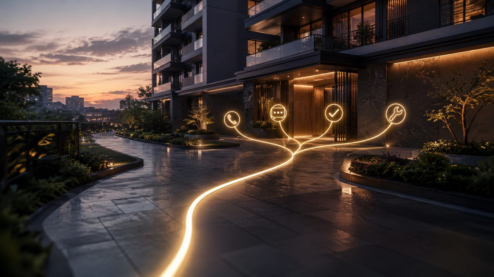

Abrechnungen, die niemand versteht
Wir erstellen Wirtschaftsplan und Jahresabrechnung pünktlich und so, dass jede Position nachvollziehbar ist – mit Erläuterungen statt unübersichtlicher Tabellen.
WEG-Verwaltung im Saarland
Funktionierende Eigentümergemeinschaften brauchen mehr als nur Abrechnungen – sie brauchen Struktur, Kommunikation und Verlässlichkeit. Wir betreuen WEGs in Völklingen, Wadgassen, Saarbrücken, Saarlouis, Bous und im gesamten Saarland.

IAusgangslage
Viele Gemeinschaften wechseln ihre Verwaltung aus denselben Gründen. So gehen wir mit den häufigsten Problemen um.
Wir erstellen Wirtschaftsplan und Jahresabrechnung pünktlich und so, dass jede Position nachvollziehbar ist – mit Erläuterungen statt unübersichtlicher Tabellen.
Was die Versammlung beschließt, setzen wir zügig um: Angebote einholen, Aufträge vergeben, Ausführung überwachen und Sie über den Stand informieren.
Bei uns geht kein Anliegen verloren. Jede Meldung wird erfasst, bearbeitet und nachverfolgt – ob per Telefon, E-Mail oder über das Kundenportal.
Regelmäßige Objektbegehungen und eine vorausschauende Rücklagenplanung machen Maßnahmen planbar, bevor aus kleinen Schäden teure Sanierungen werden.
Leistungsumfang
IIAls WEG-Verwalter kümmern wir uns um das gemeinschaftliche Eigentum Ihrer Anlage – kaufmännisch und technisch, digital organisiert und persönlich betreut.
Ergebnis:Stabile Gemeinschaften, planbare Kosten, nachhaltiger Werterhalt.
IIIVerwalterwechsel
Ein Verwalterwechsel ist kein Kraftakt. Wir begleiten Ihre Gemeinschaft vom ersten Gespräch bis zur vollständigen Übernahme.
Im kostenlosen Erstgespräch lernen wir Ihre Anlage kennen und erstellen ein individuelles Angebot.
Die Eigentümerversammlung bestellt uns per Mehrheitsbeschluss. Auf Wunsch bereiten wir Tagesordnung und Beschlussvorlage mit vor.
Wir übernehmen Unterlagen, Konten, Verträge und Beschluss-Sammlung vom bisherigen Verwalter und prüfen alles auf Vollständigkeit.
Alle Eigentümer erhalten ihre Ansprechpartner und den Zugang zu unserem Kundenportal – ab dann läuft die Verwaltung digital und transparent.
IVIhre Vorteile
Endlich verständliche und transparente Abrechnungen statt unübersichtlicher Tabellen.
Ein offenes Ohr für Ihre Anliegen – klar, ehrlich und auf Augenhöhe.
Verlässlichkeit, Tempo und Transparenz durch volldigitale Prozesse.
Maßgeschneiderte Lösungen statt Verwaltung von der Stange.
VHäufige Fragen
Ihre Frage ist nicht dabei? Rufen Sie uns an oder schreiben Sie uns – wir antworten persönlich.
Die WEG-Verwaltung kümmert sich um das gemeinschaftliche Eigentum einer Wohnungseigentümergemeinschaft. Sie erstellt Wirtschaftsplan und Jahresabrechnung, verwaltet die Gelder der Gemeinschaft, bereitet Eigentümerversammlungen vor, setzt Beschlüsse um und organisiert Instandhaltung und Reparaturen am Gebäude. Um die einzelne Wohnung, etwa deren Vermietung, kümmert sich die Sondereigentumsverwaltung.
Über die Bestellung eines neuen Verwalters entscheidet die Eigentümerversammlung mit der Mehrheit der abgegebenen Stimmen. Der bisherige Verwalter kann jederzeit abberufen werden; sein Vertrag endet spätestens sechs Monate nach der Abberufung. Wir unterstützen Sie bei Tagesordnung und Beschlussvorlage und organisieren die Übergabe aller Unterlagen.
Höchstens für fünf Jahre, bei der ersten Bestellung nach Gründung der Gemeinschaft für höchstens drei Jahre. Eine erneute Bestellung ist möglich, sie erfordert einen neuen Beschluss der Eigentümer.
Mindestens einmal im Jahr. Die Einladung erfolgt in Textform und soll mindestens drei Wochen vorher bei den Eigentümern sein. Die Gemeinschaft kann beschließen, dass Eigentümer auch online an der Versammlung teilnehmen können.
Abrechnungen, Protokolle und Beschlüsse liegen digital vor, Anliegen erreichen uns auch über das Kundenportal, und Sie wissen jederzeit, wie der Stand ist. Ihre persönlichen Ansprechpartner bleiben – die Technik sorgt nur dafür, dass nichts liegen bleibt.
Üblich ist eine monatliche Vergütung je Einheit. Ihre Höhe richtet sich nach Größe, Zustand und Aufwand des Objekts sowie nach dem gewünschten Leistungsumfang. Nach einem kostenlosen Erstgespräch erhalten Sie von uns ein individuelles und transparentes Angebot.
Direkt erreichen
Wir nehmen uns Zeit für Ihr Anliegen und melden uns zeitnah zurück.
Weitere Leistungen
Mietinkasso, Betriebskosten, Instandhaltung und Neuvermietung.
Rundum-Betreuung Ihrer vermieteten Eigentumswohnung.
WEG-, Miet- und Sondereigentumsverwaltung auf einen Blick.
Lassen Sie uns in einem kostenlosen Erstgespräch klären, wie wir Ihre Eigentümergemeinschaft entlasten können.